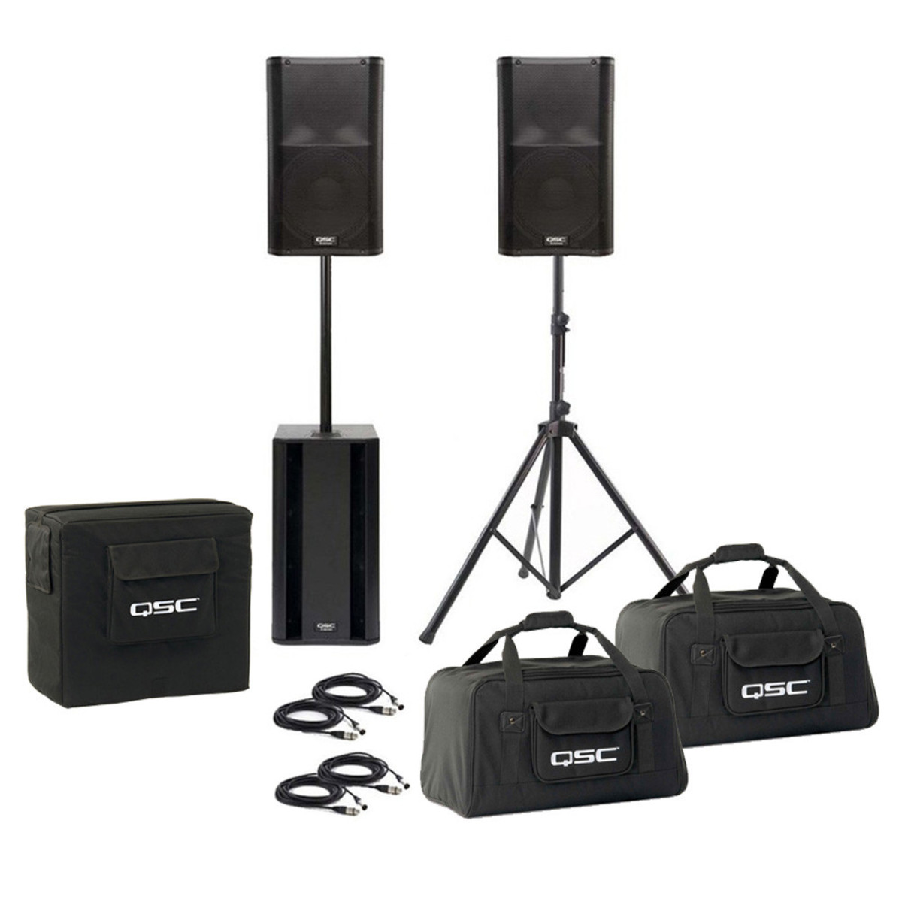
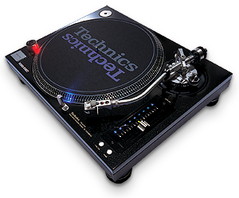

Speakers
High-quality speakers for any event size. Available in various sizes and configurations. Listen to to full range powered speakers from QSC and you will hear music and your favorite songs in a new way with plenty of bass.
View Speakers

Mixers
Professional mixers to ensure your audio is clear and balanced. Suitable for DJs and live performances.
Rent a DJ Mixer
Digital Mixing Boards
Modern digital mixing boards for professional audio control and flexibility for performances and simultaneous recording of your band, presentations, and more.
Rent a Digital Audio Mixer

Lighting
Enhance your event with our lighting options, including uplighting, spotlights, and more.
Rent Lighting

Microphones
Wireless and wired microphones for speeches, performances, and announcements.
Rent Microphones

Turntables
Turntables are often considered superior to DJ controllers by some people because they offer a tactile and hands-on way to mix music. With turntables, DJs can manually manipulate the vinyl records to create scratches, blends, and other effects. Some DJs enjoy the physical aspect of DJing with turntables and feel that it allows them to have more control over their mixes. Additionally, turntables are often more durable and reliable than DJ controllers, which can be prone to malfunction or lag.
Rent Turntables

Accessories
We have the accessories and tools needed to make your life easier including speaker stands, trussing for lighting, and occasionally have used gear for sale.
Rent Accessories

Custom Packages
Need something specific? We can create custom rental packages to fit your event's unique needs.
Request Custom Package
Rental Terms
Learn about our rental terms, including duration, delivery options, and policies.
View Rental Terms